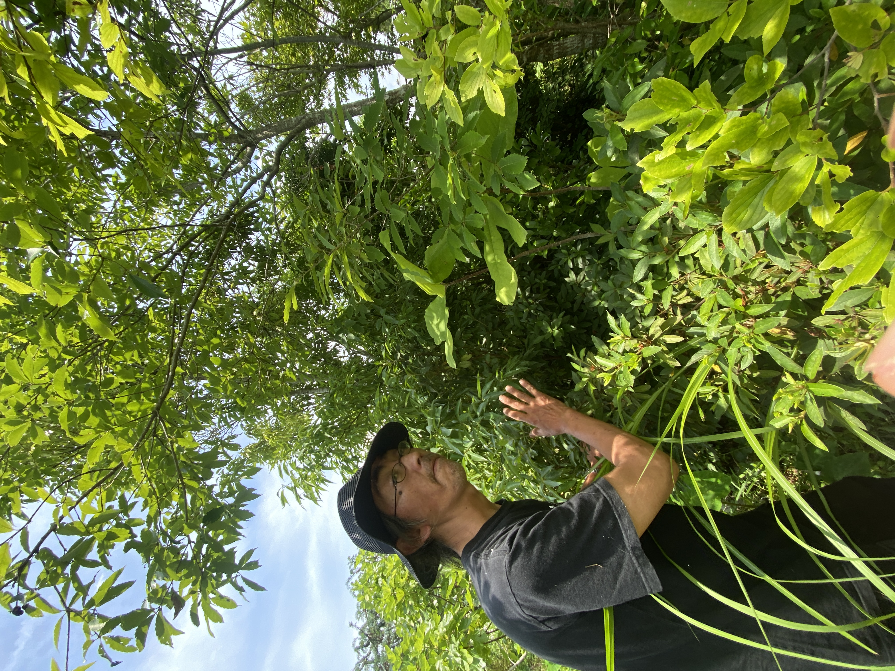
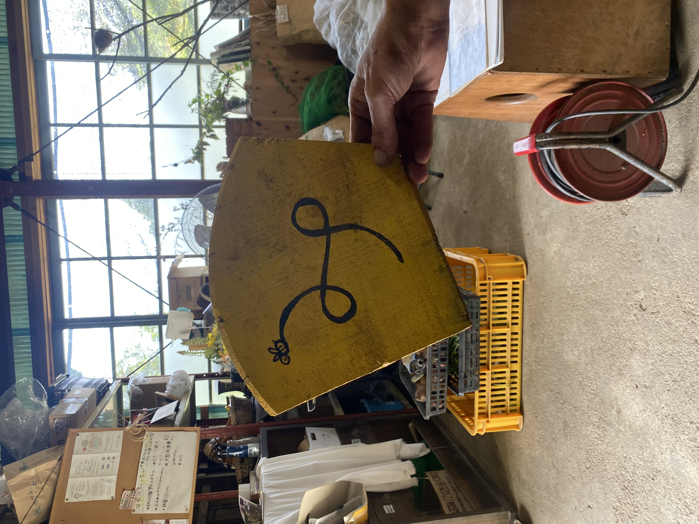

フォレストガーデンで聞いたこと
教育は、
デザインだった。
あっちゃんに聞いた、植物、動線、余白、好奇心、そして人が自然に動き出す場のこと。

この文章は、インタビュー音声の文字起こしをもとに、読みやすさのために言葉を整えた聞き書きです。歴史、地形、風水、信仰、職歴などに関わる細部は、公開前にご本人確認・事実確認を前提としています。
あっちゃんの話は、めちゃくちゃ面白かった。
最初は、何を聞いているのか追いつくのに必死だった。庭の話をしているようで、暮らしの話でもあり、教育の話でもあり、組織の話でもあり、土地の話でもある。
でも、聞いているうちに、フォレストガーデンで僕が身体で感じていたものに、少しずつ言葉が追いついてきた。
あっちゃんは、僕から見ると、デザイナーだった。
絵をきれいに描く人という意味ではない。人の視点、身体の動き、植物の伸び方、光、影、風、水、好奇心、安心感。その全部を見ながら、場の流れを整える人だった。
庭ではなく、場の流れを見ている
あっちゃんは新城生まれ。都市部で働いた経験もあり、今は庭仕事、剪定、家まわりの困りごと、空き家、暮らしの相談まで、かなり幅広く見ている。
フォレストガーデンであっちゃんが見ているのは、単なる庭の美しさではなかった。
「鳥の視点で見ると、全部こうなってて。ここが淀んでるよ、とか。ここを流すと、こう流れるからって」
僕が「デザイナーですね」と言うと、あっちゃんは自然にこう返してくれた。
「デザインですね。絵を描くとか、花を生けるとか、庭を作るとか、それと一緒だし、会社とかのチーム作りもする。全部つながるから」
ここで、僕の中のデザインの意味が変わった。
デザインとは、見た目を整えることだけではない。人がどう感じ、どこを見て、どう動き、どこで安心し、どこで好奇心が生まれるのか。その流れをつくることだった。
配置には、全部意味がある
あっちゃんの話を聞いていて、何度も驚いたのは、配置を見る解像度だった。
風がどう通るか。光がどこから入るか。日陰がどこにできるか。水がどこへ流れるか。トイレがどこにあり、キッチンがどこにあり、人がどこで立ち止まり、子どもがどこで遊び、大人がどこから見守れるか。
それらは、ただの設備や偶然の配置ではなかった。
あっちゃんは、その場所にあるものを一つずつ見ながら、「ここに人が集まったらどうなるか」「子どもがここで遊んだら親は安心して見守れるか」「疲れた人が一人になれる場所はあるか」まで見ていた。
「この光線を考えて、どこを遊び場にするか。そしたら子どもたちは勝手に遊べて、親としては見守りもできる」
この言葉を聞いた時、僕は「場を整える」という言葉の意味を、また一つ深く受け取った。
人に何かをさせるのではない。場の配置が、人の安心や好奇心や動きを自然に生み出していく。
ここに子どもが集えば、どういう動きが生まれるのか。ここに大人が座れば、どこが見えるのか。ここに影があれば、誰が休めるのか。
配置は、問いだった。
場所そのものが、人に問いかけていた。
スピリチュアルなのに、スピリチュアルじゃない
あっちゃんの話には、風水や易、土地の流れ、神社、信仰の話も出てくる。
言葉だけ聞くと、少しスピリチュアルに聞こえるかもしれない。
でも、僕が受け取った感覚はまったく逆だった。すごく地に足がついていた。
あっちゃんにとって、風水や易は、人を信じ込ませるためのものではない。場を読むための道具であり、羅針盤であり、コンパスだった。
「羅針盤として、易とか風水とか、こういうことをコンパスにしてるだけ」
「中心点があって、北はどっちか、ここは今どこかっていう。そしたら迷わないから」
これは、かなり印象深かった。
「気の流れ」という言葉を、日当たり、風通し、動線、水の流れ、心理的な安心感として見ていく。
「場が淀んでいる」という感覚を、視界、湿気、排水、動きにくさ、人の滞りとして見ていく。
見えないものを、見えるものから読む。
怪しさではなく、観察の技術として使っている。
だからこそ、あっちゃんの話は不思議なのに、現実から浮いていなかった。
危ないよ、と言葉で教えるだけではない。人が自然に気づくように、見る場所、歩く場所、身体の角度、好奇心の入口を整える。あっちゃんの話から、僕はそう受け取った。
ミツバチ注意を、宝探しに変える
特に面白かったのが、ミツバチの看板の話だった。
普通なら「ミツバチ注意」と四角い看板に書く。だけど、あっちゃんはそれをしない。
「ミツバチ注意看板なんです」
「四角い看板でミツバチ注意って書くと、ミツバチに関してすごく硬い感情が生まれる」
だから、割れた樽の底を再生して、ミツバチを絵で見せる。あちこちに置けば、「あ、こっちにもあった」「まだあるんだ」と、宝探しのようになる。
「好奇心と親しみ。まずは親しんで」

割れた樽の底を再生した、ミツバチの看板。「注意」を「好奇心」に変えるための小さなデザイン。
これは、注意喚起を消しているわけではない。
危険を恐れだけで伝えず、親しみと好奇心に変えている。
子どもにも大人にも、先に緊張を与えるのではなく、「あれ、何だろう」と近づく入口をつくっている。
危ないよ、ではなく、身体が気づくように
薫ちゃんが一番ビンタを食らったように感じたのは、この感覚だった。
枝や葉が少し出ている。通る時には少し頭を下げる。その時、自然と視線が下に向く。すると、足元の注意したい場所が見える。
「危ないよ」と注意書きを貼るのではなく、身体が自然に動き、その動きの中で気づくように設計している。
これは、教育そのものだった。
「先をきれいにやっちゃうんじゃなくて、あえてここ一本残す」
全部をきれいに整えすぎると、余白がなくなる。
余白がないと、人も場も固くなる。あっちゃんは剪定の話をしながら、人の話もしていた。
「余白がないと折れますからね」
この言葉は、植物にも、人にも、組織にも、そのまま当てはまる。
藍工房への道も、説明ではなく誘い
神野さんの藍染工房へ向かう道の話も、あっちゃんらしかった。
「藍工房はこちらです」と書くのではない。青い矢印を置く。すると、「何だろう」と思う。自然の色の中に青が見える。その先に、秘密の場所があるように感じる。
「青い矢印なんや、この矢印って」
「お菓子の家みたいに、こうこぼってくと、秘密のクラフトになる」
ここでも、説明より先に好奇心がある。
人は、言われたから動くのではなく、気になったから動く。あっちゃんは、その「気になる」をつくっている。

鳥の群れ、中心軸、コミュニティ
あっちゃんの話は、植物や看板だけで終わらない。
鳥の群れの動きの話も出てきた。何千羽もいる鳥が、リーダーなしで大きく形を変えながら動いていく。その原理は、三つだけだという。
「まずはぶつからないようにしてる。誰かがこう行ったら、それに沿う。もう一つは中心に向かっておく」
距離感を保つ。隣の動きに寄り添う。中心に戻る。
これを聞いた時、フォレストガーデンのコミュニティのあり方と重なった。
「中心軸があるとぶれない」
カリスマ一人で引っ張るのではない。
全員が同じ動きをするのでもない。
それぞれが違う動きをしながら、中心にあるものをどこかで共有している。
だから、場がばらばらにならない。
地元の人だからできる橋渡し
あっちゃんは、地元側の人でもある。
移住者同士で関係が閉じてしまうこともある。そこに、地元の信用を持つ人が入ると、地域との接続が変わる。
「原田くんが信頼してる人なんでしょ。じゃあ貸すよっていうかな」
これは、とても大きい。
地域おこしは、外から人を呼ぶだけでは続かない。来た人が、地元の信用や暮らしの文脈とつながっていく必要がある。
あっちゃんは、その翻訳者でもある。
植物を読む人であり、家を読む人であり、土地を読む人であり、人の関係性を読む人でもある。
主導権は、受け取り側にある
僕は、今回の新城と天川のつながりをどう言葉にしていくかを考えていた。
でも、あっちゃんのこの言葉がとても残った。
「デザインに落としても、それは文字にしても、結局主導権は受け取り側にある」
こちらの意図通りに受け取らせようとしない。
でも、何も置かないわけでもない。
受け取り側が自分で気づけるように、入口を置く。問いを置く。余白を置く。身体が動く導線を置く。
そこに、あっちゃんのデザインがある。
教育は、教えることではなく、環境を整えること
僕は天川村で寺子屋をつくっている。
そこでは、子どもたちに正解を渡すことではなく、その子が自分で感じ、考え、動き出せる場をどう育てるかを大切にしている。
僕自身は、問いかけを言葉でしてきた人間だと思う。
でも、あっちゃんは言葉だけではなく、デザインで問いを置いていた。身体が動くように、視線が変わるように、自然と気づきが起きるように、場そのものを設計していた。
そこに、僕は本当に驚いた。
あっちゃんの話を聞いて、僕が天川村でやろうとしていることの奥にある構造が、もう一段はっきり見えた。
教育は、教えることだけではない。
子どもが自然に見つけるように。身体が動くように。問いが生まれるように。安心して失敗できるように。人の役割が自然に立ち上がるように。
場をデザインすることも、教育だった。
あっちゃんは、フォレストガーデンの中で、見えない流れを見ている人だった。
植物、動線、看板、余白、日陰、水の流れ、子どもの目線、大人の安心、地元との信用。
その全部をつなげながら、人が自然に気づき、動き出す場を整えている。
教育はデザインだった。
あっちゃんの話で、僕はそれを身体ごと理解し始めた。